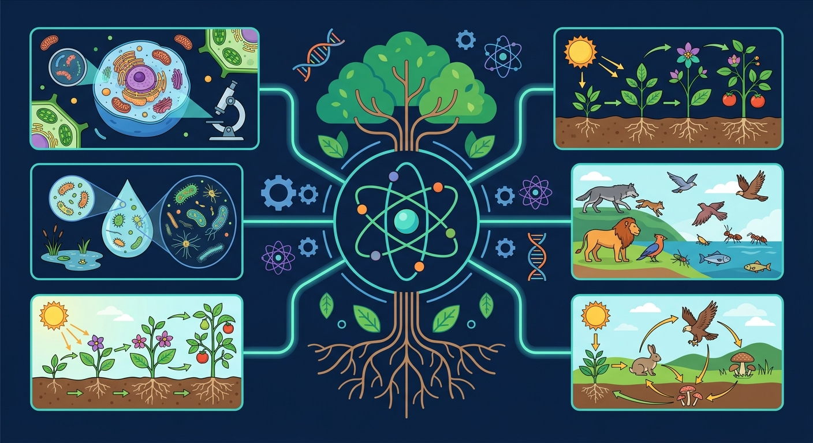

Interactive Canvas
🎮 行为分类互动
Canvas 实时展示分类进度，将行为卡片拖放到正确分类。
📋 待分类（拖到下方）
🧬 先天性行为
📚 学习行为
把所有卡片拖到对应分类后，点击"检查答案"。
蜘蛛从未上过编织课，却能织出精美的网；小狗需要反复训练才能学会握手——为什么差别如此之大？

先选一个你关心的问题，后面的学习会围绕它展开。
选择或输入后，本课会围绕你的问题展开。
不用担心答错，前测帮你发现重点。
下列哪个行为属于学习行为？
已经知道：动物种类繁多，表现出丰富多样的行为。
但是问题是：有些行为天生就会，有些需要后天学习——本质区别是什么？
所以要解决：从遗传和环境两个角度区分行为类型。
生来就有，由遗传物质决定，同种个体都会表现。
例：蜘蛛织网、蜜蜂跳舞、候鸟迁徙、蚕吐丝
在遗传基础上，通过经验和学习获得的行为。
例：鹦鹉学舌、黑猩猩钓白蚁、大山雀偷喝牛奶
先天：生来就有 → 遗传决定
学习：后天获得 → 经验积累
动物越高等，学习行为越复杂
学习行为也有遗传基础！只是还需要环境和经验的参与。例如黑猩猩能学会钓白蚁，蚯蚓就不能。
简单群居（如蝗虫聚集）不是社会行为。社会行为必须有分工合作和/或等级制度。
候鸟迁徙是先天性行为！由遗传决定，不需要"老鸟"教。但迁徙路线细节可能有学习成分。
动物行为按功能可分为：觅食行为（蜘蛛结网、蜂鸟采蜜）、防御行为（变色龙变色、乌贼喷墨）、繁殖行为（孔雀开屏、蛙鸣求偶）、迁徙行为（候鸟南飞、鲑鱼洄游）。每种行为都是长期自然选择的结果，有利于个体或种群的生存繁殖。
蜘蛛织网捕虫、猎豹追捕羚羊、啄木鸟啄食虫子
壁虎断尾、乌贼释放墨汁、刺猬蜷缩成球
孔雀开屏求偶、企鹅孵蛋、青蛙鸣叫
大雁南飞、鲑鱼洄游、角马大迁徙
社会行为是群体内分工合作的行为，具有明确分工和等级制度两个特征。典型例子：蜜蜂群（蜂王产卵、工蜂采蜜筑巢、雄蜂交配）、狼群（头狼指挥、分工围猎）、蚂蚁群（兵蚁防御、工蚁搬运）。社会行为中的信息交流方式包括动作、声音和气味（如蜜蜂的圆形舞和摆尾舞传递食物方向距离信息）。
群体内有组织、有分工合作，有的有等级制度。
蚁后产卵 · 工蚁觅食筑巢 · 兵蚁保卫
蜂王产卵 · 工蜂采蜜酿蜜 · 雄蜂交配
首领指挥行动、优先享有资源。靠动作/声音/气味传递信息。
动物行为对个体和种群有重要的生存意义：觅食行为保证营养获取，防御行为降低被捕食风险，繁殖行为延续物种，社会行为提高群体生存效率。学习行为使动物能适应变化的环境，而先天性行为则保证了基本生存技能无需后天习得即可执行。理解动物行为有助于科学养殖、生态保护和仿生学应用。
获取食物、逃避敌害、找到配偶。
繁殖行为和社会合作提高后代存活率。
先天性行为是进化的产物；学习行为增强适应能力。
Canvas 实时展示分类进度，将行为卡片拖放到正确分类。
📋 待分类（拖到下方）
🧬 先天性行为
📚 学习行为
下列叙述正确的是：
选择左边的行为实例，再点右边的行为类型完成配对。
观察兔子种群在不同环境下的自然选择过程。
💡 添加变异 → 设置环境因子（狼/食物）→ 观察哪些性状有利于生存
判断：蚕吐丝结茧属于____行为（先天性/学习），因为它由____决定。
一只刚出生的小鸟被人工饲养，从未见过同类，却能在成年后筑巢。请解释为什么。
设计一个实验方案，验证"蚯蚓走迷宫"是学习行为。需包含：实验假设、变量控制、预期结果。
海龟出生后自行爬向大海，这属于什么行为？
蜘蛛织网是先天性行为（遗传决定），小狗做算术是学习行为（经验获得）。